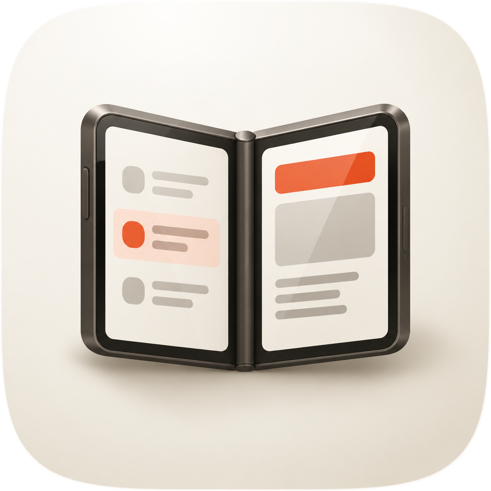
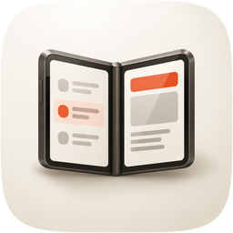
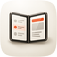

| Take | Hero at 1024, then renders at 128 / 64 / 48 / 32 / 16 css px (2× retina sources), plus the 16px squint magnified | Rubric | Verdict |
|---|---|---|---|
| master · icon.svghand-authored layered SVG (build_icon.py) — SHIPS | 11 / 12 | Passes 1–4 on the renders: squircle from the shared path, glyph centred in the safe zone, the open V silhouette names a book-style foldable, and at 16px the dark V with its two light panes and one ember mark still reads. One key light, porcelain plus warm graphite plus one ember. Took the raster's rounded body, rounded screens and pill rows after the first draft read as an open book. Loses #10: variant robustness is untested, and the porcelain ground carries part of the identity. | |
| engineB · icon-engineB-arrow.svgArrow 2 vector take | 8 / 12 | Fails #1: Arrow drew a square tile with the squircle inset inside it, so the corners are baked and the tile is square beside its siblings. Flat material, no contact light. Its rounded panes, pill rows and image glyph were the cue for the master's second round; nothing else salvaged. | |
| engineC · icon-engineC-raster.pngGPT Image 2.5 Sunburst raster, corpus-referenced (apple-18, apple-30, mac-craft) |    |
10 / 12 | Best material: a metal-banded body, a real hinge, glass on the screens. Passes 1–4 once squircle-masked. Loses #9 (a photographic phone among drawn objects reads as a different era from its siblings) and #10. Its material is the target the master moved toward; it does not ship because the master must stay a vector. |